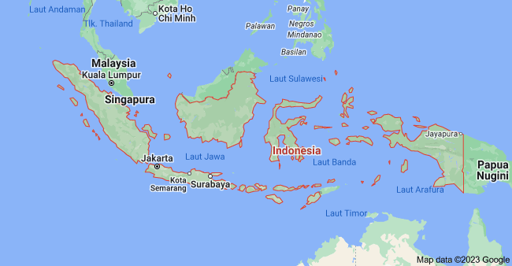

Fakta Unik Indonesia
Indonesia atau bisa disebut dengan Negara Kesatuan Republik Indonesia, selain itu Indonesia memiliki nama alternatif yaitu Nusantara. Negara ini terletak di ASIA TENGGARA. Secara lebih spesifiknya, Indonesia terletak di antara garis khatulistiwa dan berada di antara benua Asia dan Oseania, bahkan Indonesia juga terletak di antara dua samudra, yaitu Samudra Hindia dan Samudra Pasifik.

Dari Sabang di tanah Aceh hingga Merauke di tanah Papua, Indonesia terdiri dari berbagai suku, bahasa dan agama. Berdasarkan rumpun bangsa (ras), Indonesia terdiri dari masyarakat adat, yaitu Mongoloid Selatan/Austronesia dan Melanesia, dengan jumlah penduduk Austronesia terbesar, terutama di Indonesia bagian barat. Lebih khusus lagi, suku Jawa merupakan suku terbesar, dengan jumlah penduduk mencapai 42% dari total penduduk Indonesia.
Indonesia memiliki semboyan nasional, yaitu “Bhinneka Tunggal Ika” yang memiliki arti “berbeda-beda, tetapi tetap satu”. Semboyan ini menggambarkan keragaman sosial budaya yang membentuk negara kesatuan. Selain padat penduduk dan luas wilayah, Indonesia merupakan kawasan alam pendukung keanekaragaman hayati terbesar kedua di dunia.
Dengan banyaknya keragaman dan kekayaan alam di Indonesia ini, tentu memiliki fakta-fakta unik yang mungkin belum pernah kamu tahu.
Tentang Kami
Ini adalah bagian tentang kami. Kami adalah sebuah tim kreatif yang membuat situs web.
Sumber : Gramedia